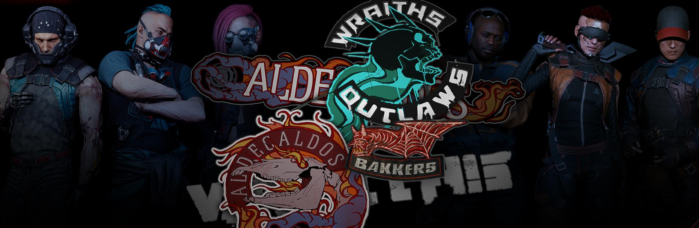

流浪者
枪与赛博机车,这就是我们守住生命线的东西。我们无家可归，除了家族大车队。我们没有任何权益，除了那些我们争取到的。我们被条子赶出了城，我们被公路战士突袭，但我们能够幸存因为我们有枪与机车……
这里有妇孺老者——家在这里。它不是一个帮派团伙，他们都是我的家人。
——流浪者 圣地亚哥

背景故事
在上世纪末的大崩溃期间，流浪者作为一个独立的社会阶层出现了。
全球金融危机导致了极高的失业率，全世界成千上万的人都失去了工作和家园。
据估算，在过去的那些日子里，美国约有四分之一的人无家可归。一波接一波的暴乱席卷全国，但往往被政府和崛起的公司残酷地镇压下来。
从那时起，成群的游民开始从一个城市逃难到另一个城市，以寻求工作、安定和更好的生活前景。大多数难民乘汽车迁徙，通常都带着一家老小和他们所有的财产。这是现代人类史上的最大危机，但出乎意料的是，接下来80年的大规模移民却创造出了一个被共同的历史、生活方式和家庭纽带联系而成的新型社会群体。这些人被称为流浪者。
大多数流浪者更喜欢注重功能而非形式的时尚，他们随身携带背包和挎包，以确保他们的必需品总是触手可及。不少人还用部落标识来装饰自己的皮肤。
流浪者总是在迁徙，像他们的前辈一样坐着汽车，拖家带口地在全国各地流动。迫于生计，他们也会不断变换工作岗位，有时他们会短暂地安顿下来工作，工作结束后就收拾行李走人。他们住在营地里，营地里一般会有多辆车停在废弃的建筑周围。在他们的逗留期间，这些建筑将用作会议场所、生活区、医院、学校或其他能够提供庇护的设施。
流浪者的社会构成可分为家族、部族、部落和民族。家族由2到100人构成。部族由多个家族组成，成员从几百人到一千多人不等。部落则要大得多，由几万人组成。民族是最大的群体，有几十万，最大的流浪者民族约有一百万名成员。虽然这些概念本身不可互换，但人口的数量仍是不固定的。虽然流浪者的家族、部族、部落和民族之间确实存在冲突和分歧，但大多仅止于表面上的争斗，并不会激化为全面战争。流浪者拥有自己的领土，他们只操心自己的事务，但也会与彼此保持友好联系和往来。在这方面，流浪者与大城市里的帮派们大相庭径。
当今世界的流浪者可分为七大民族和乱刀会。顾名思义，这七大民族是由七个不同的流浪者民族组成，每个民族都有一位个性鲜明、受人尊敬的领袖。乱刀会则是流浪者社会里的亡命徒和弃儿。他们以公路强盗的身份出没，只按自己的规矩行事。
每位流浪者都在各自的群体中扮演着独特的角色，包括领导者、司机、保卫者、拾荒者、医生、教师和工人。每个人都得以某种方式为社区做出贡献。流浪者团体在迁徙期间会接受各种各样的工作：他们会运送人员和货物（合法/非法），季节性地在农场工作，或是与大型建筑工地签订短期合同，提供人力和设备。有一技之长的流浪者会在工地上尽自己的职责，剩下的流浪者则留在营地里，负责车辆维护，并照顾儿童和老人。在工作完成后，整个团体就会收拾东西继续上路。
流浪者的教育
对于一群漂泊不定的家伙来说，流浪者的教育水平却出奇地高。他们不希望延续过去的“野蛮教育”，因此，他们遵循了美国乡村家庭教育的传统。
教师负责教化成年人和儿童，营地一般也会设置移动图书馆、网络运营站和通讯中心，以便与世界各地保持联系。规模更大的流浪者营地甚至有自己的移动电影院和剧院。流浪者的教学课程以实用性的知识为主，如机械、农业或工程知识，这些知识可以帮助他们更好地胜任工作，一些流浪者还会钻研经典文学甚至哲学。在不少情况下，流浪者的口语往往比大城市居民所使用的语言更为复杂和精巧。